Conectar o módulo e escolher o kit
É por aqui que você define qual kit de bateria vai tocar e pra onde o som vai sair. O app detecta módulos MIDI conectados automaticamente — por USB assim que o cabo é plugado, ou por Bluetooth (BLE-MIDI) se o módulo já estiver pareado nas configurações do sistema.
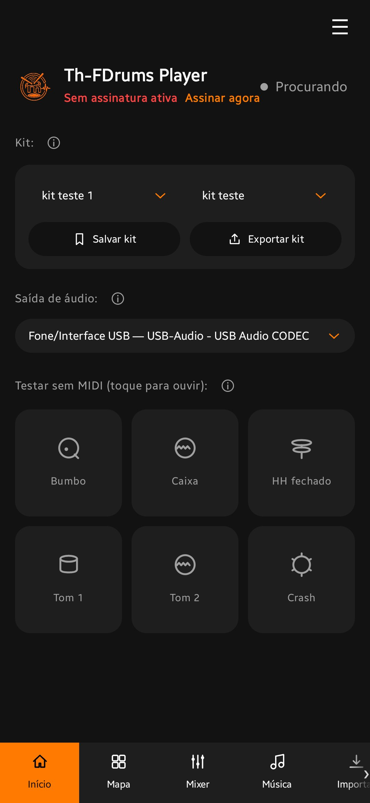
- Kit: o primeiro menu escolhe qual bateria carregar; o segundo, qual kit salvo usar. O Kit Padrão é sempre o kit original da importação — ele nunca é alterado, pra você poder voltar ao timbre original quando quiser. Os ajustes que você fizer (mixagem, peças trocadas, chimbal) só ficam guardados num kit salvo com nome. Toque no ✕ ao lado do nome, dentro do menu, pra excluir um kit ou um kit salvo.
-
Salvar kit: a janela já abre com o nome do kit em uso. Com o Kit Padrão, digite um nome novo pra criar o seu kit (o nome "Kit Padrão" não pode ser usado). Com um kit que você criou, é só confirmar em "Salvar por cima" pra atualizá-lo quantas vezes quiser. "Exportar kit" gera um .zip completo (amostras + mapeamento + mixagem + estágios do chimbal) pra levar o kit pra outro aparelho ou fazer backup.
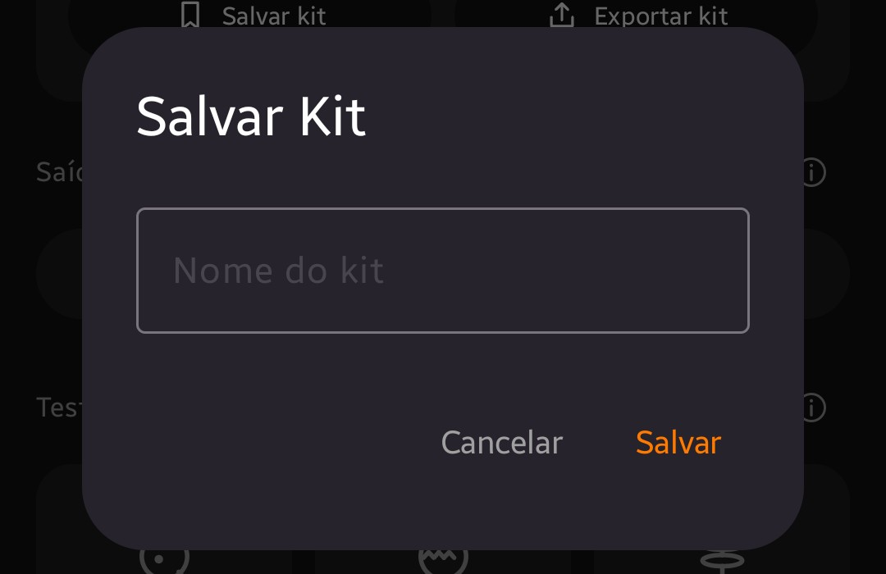
Salvar kit -
Saída de áudio: escolhe pra onde o som vai. Ao conectar uma interface de áudio USB, o som passa pra ela sozinho, e o app lembra a saída escolhida mesmo depois de desconectar e reconectar — se o áudio cair, ele reconecta sozinho. Pra usar um módulo Bluetooth, toque em "Conceder permissões Bluetooth": o Android pede a permissão "Dispositivos por perto", usada só pra conectar aparelhos já pareados (o app não procura aparelhos nem usa sua localização).
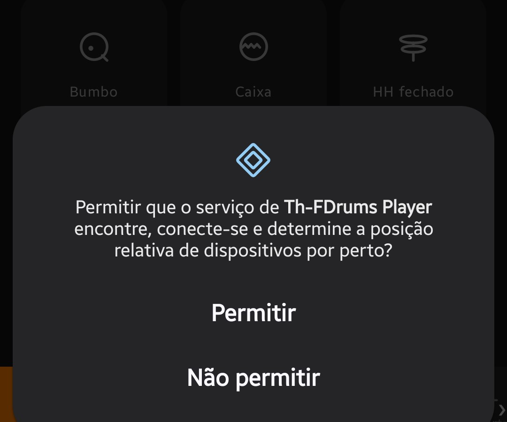
Permissão Bluetooth - Testar sem MIDI: toque os botões pra ouvir o kit carregado sem precisar de nenhum controlador conectado. A força do toque (velocity) varia conforme onde você toca dentro do botão — mais embaixo é mais suave, mais em cima é mais forte. Com o celular deitado aparecem mais peças (ride, tom 3, surdo, crash 2).
- Assinatura PRO: a linha abaixo do nome do app mostra o status — "Teste grátis · N dias" durante os 7 dias de teste, "PRO ativo" com a assinatura, ou "Sem assinatura ativa". Toque em "Assinar agora" pra ver os planos mensal e anual, as condições (renovação automática e como cancelar) e o link pra gerenciar a assinatura no Google Play. Sem assinatura, o app continua tocando bumbo, caixa e chimbal; a assinatura libera todas as peças, a gravação de vídeo e a importação sem limite.
Mapeamento de notas e calibração do chimbal
Aqui você vê e ajusta qual nota MIDI dispara cada peça do kit. Tem três modos, alternáveis pelas abas no topo:
-
Peças do kit: lista todas as peças do kit carregado. Em cada linha: ▶ toca a peça, o campo "nota" mostra/edita qual nota MIDI aciona aquela peça, ⇄ abre "Trocar" pra substituir a amostra daquela peça por outra do banco, e + salva a peça atual no banco (aba Importar → Banco de peças) com um nome próprio. Trocar uma peça mantém a mixagem e o kit salvo em uso — salve em "Salvar kit" pra guardar a troca.
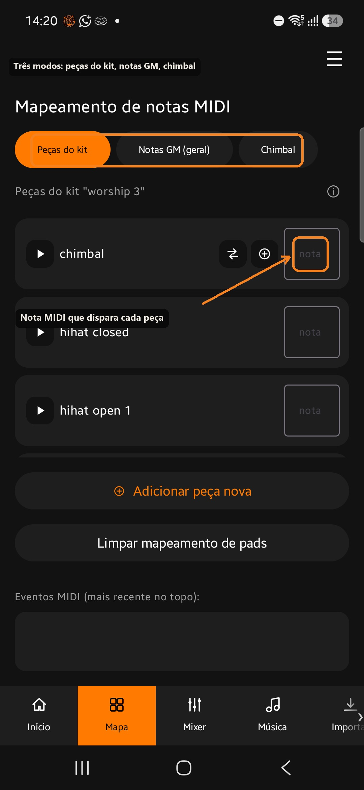
Peças do kit 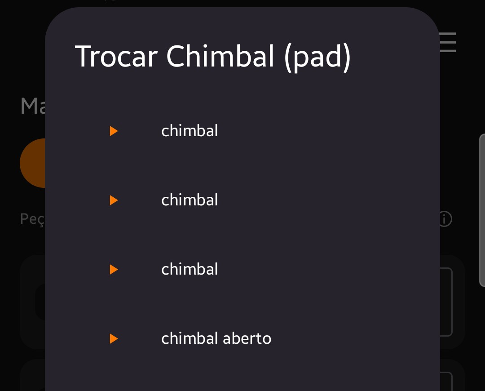
Trocar amostra (⇄) 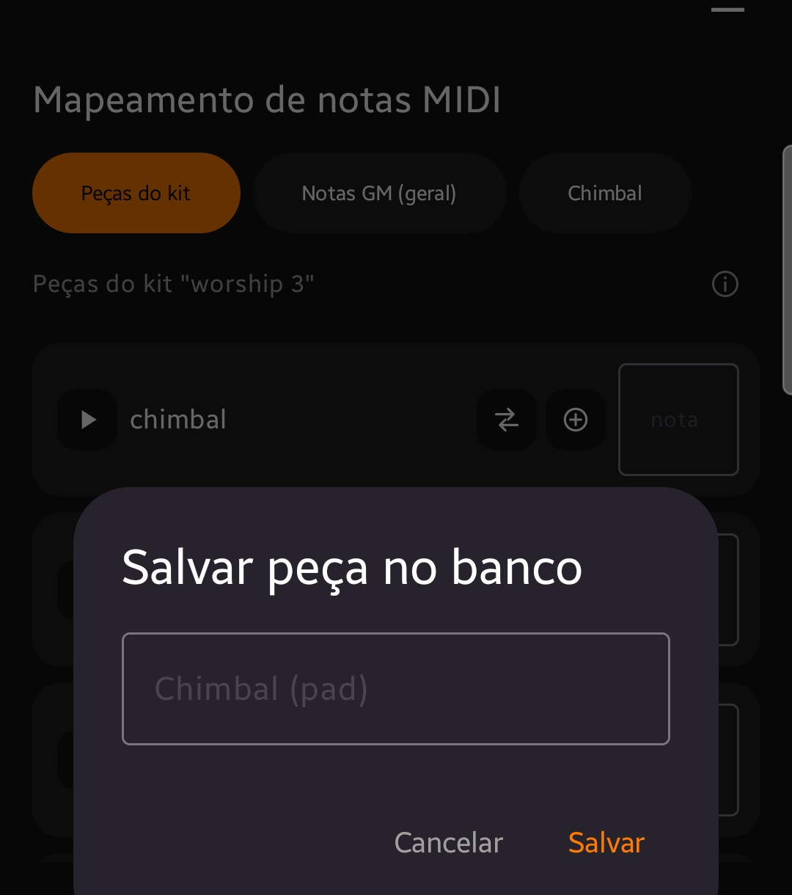
Salvar peça no banco (+) - Adicionar peça nova / Limpar mapeamento: no fim da lista, "Adicionar peça nova" coloca uma peça do banco em qualquer nota livre, além das que o kit já tem; "Limpar mapeamento de pads" remove todas as notas atribuídas de uma vez (não apaga as peças, só desliga o gatilho MIDI delas).
-
Notas GM (geral): no topo, o Padrão de mapeamento escolhe um perfil pronto pro seu módulo ou software (além do General MIDI). Abaixo, o mapeamento completo por peça, os campos de nota do pad e do pedal do chimbal e o log de "Eventos MIDI" pra conferir em tempo real o que o módulo está enviando. Pratos com choke por aftertouch param de soar quando você agarra o prato.
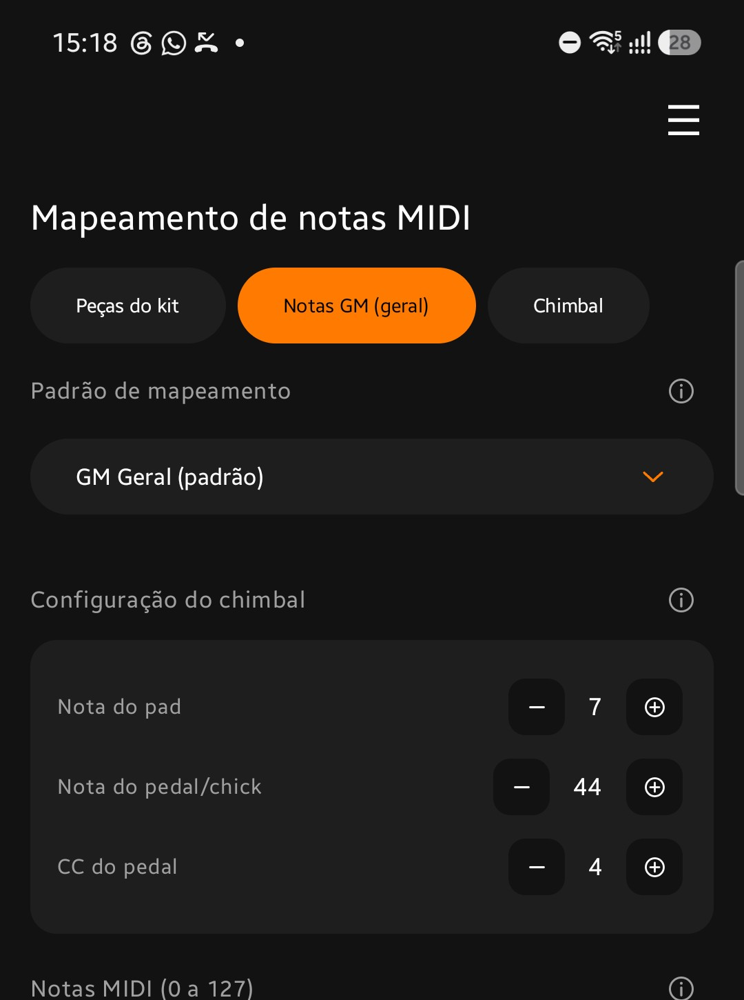
Notas GM (geral) -
Chimbal: tela dedicada ao chimbal. Estágios de abertura lista as amostras do mais fechado ao mais aberto (detectadas sozinhas na importação; dá pra adicionar do banco ou remover). O chimbal troca de estágio conforme a posição do pedal — inclusive com o prato ainda soando, com transição suave — e fechar o pedal por completo abafa o som aberto na hora. Também escolhe a nota do chick e o som do footsplash (pisar e soltar o pedal rápido).
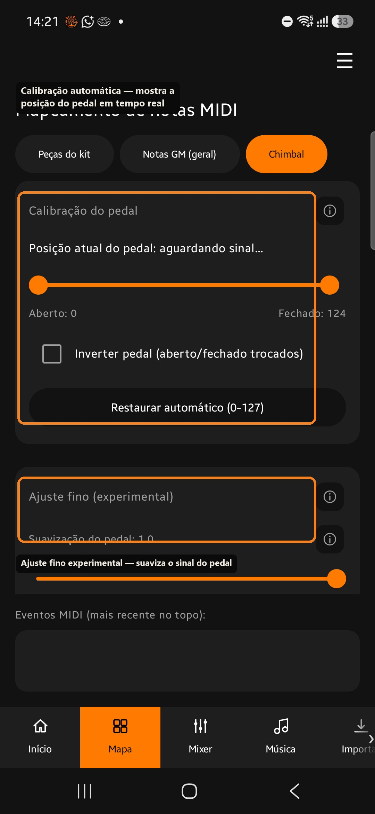
Chimbal
Ajuste fino: "Suavização do pedal" filtra o tremor do sensor (suba se o som trocar de estágio sozinho); "Suavização do abafamento" define a duração da transição entre estágios; "Curva dos estágios" concentra a troca no meio do curso do pedal; "Sensibilidade do footsplash" e "Sensibilidade do chick" definem o quão brusca a pisada precisa ser; desligue "Detectar chick pela posição do pedal" se o seu módulo já manda a nota do chick. Em "Pedal mexendo com o prato soando" você escolhe o comportamento: Sempre (troca abrindo e fechando), Só ao fechar, Nunca (só a próxima pancada muda) ou Nunca + abafar pelo pedal. "Pancada mais aberta não corta a anterior" e "Não reabrir até o estágio mais aberto" refinam as trocas.
Mixagem profissional por peça
Cada peça do kit tem seu próprio canal, com uma cadeia de efeitos no estilo de uma mesa de estúdio. Todo efeito tem um painel com gráfico, knobs e chave liga/desliga, e o gráfico mostra o que o áudio realmente está fazendo.
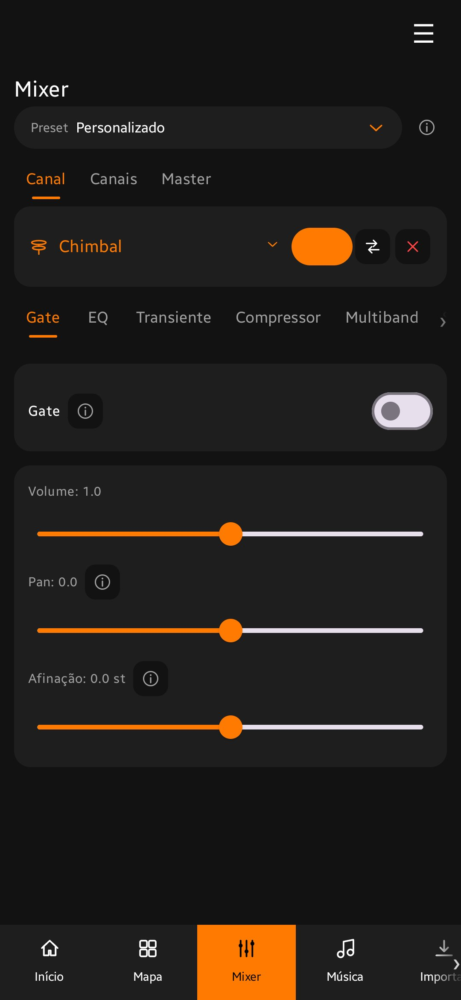
- Canal / Canais / Master: "Canal" edita a peça selecionada; "Canais" mostra todos os faders lado a lado, com mute (M) e solo (S), como uma mesa; "Master" edita o som final. Com o celular deitado, o Master fica fixo à direita enquanto as peças rolam.
- Volume, pan e afinação: sempre disponíveis em cada canal. "Vincular canal com" junta peças (ex.: pele, aro e rimshot da caixa) pra que qualquer ajuste valha pras duas.
-
Gate: corta o som abaixo do limiar — com Range e Hold, útil pra eliminar vazamento em peças gravadas.
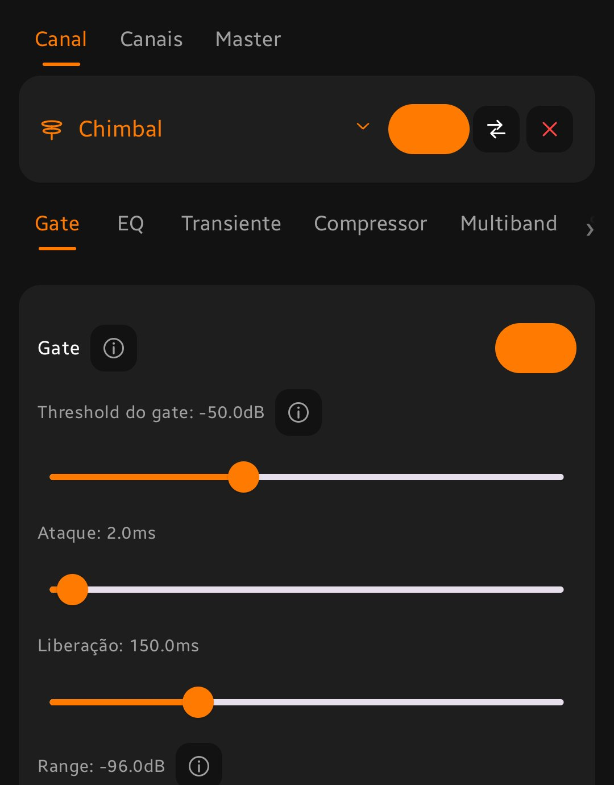
Gate -
EQ: 6 bandas com filtro de graves, e um editor gráfico: arraste os pontos da curva pra ajustar frequência e ganho.
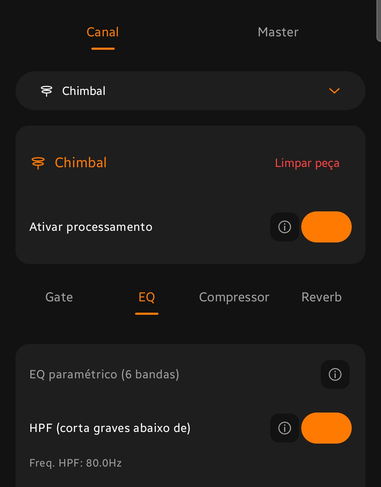
EQ - Transiente: realça ou suaviza o ataque da peça (mais "estalo" ou mais corpo) sem mexer no volume.
-
Compressor e Multiband: o compressor nivela a dinâmica (threshold, ratio, joelho, ataque, liberação e makeup); o Multiband divide o som em graves e agudos e comprime cada parte separadamente. O Sidechain faz o compressor de uma peça reagir a outra (ex.: pratos abaixando quando o bumbo bate).
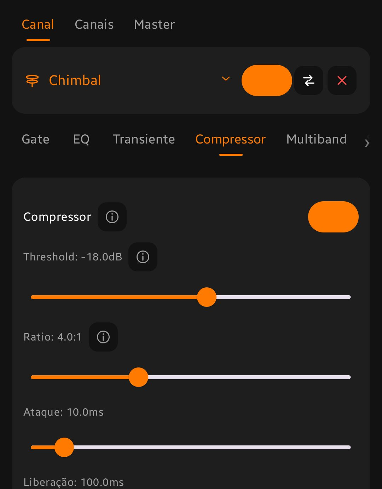
Compressor - Saturação: adiciona cor e harmônicos (drive) sem aumentar o volume.
-
Reverb: dois reverbs compartilhados, Sala e Hall, com envio por peça, pre-delay e o tempo de decaimento no gráfico.
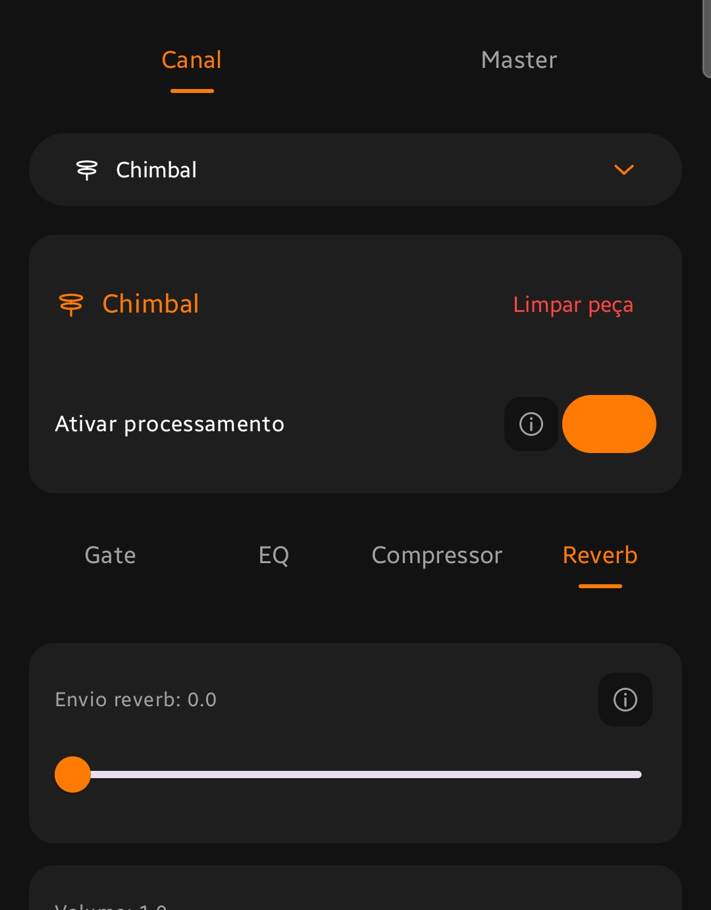
Reverb -
Bus bateria e Master: o bus junta todas as peças com EQ e compressor próprios (cada um com liga/desliga); o Master tem EQ, compressor e um limiter que impede o som de distorcer no volume máximo.
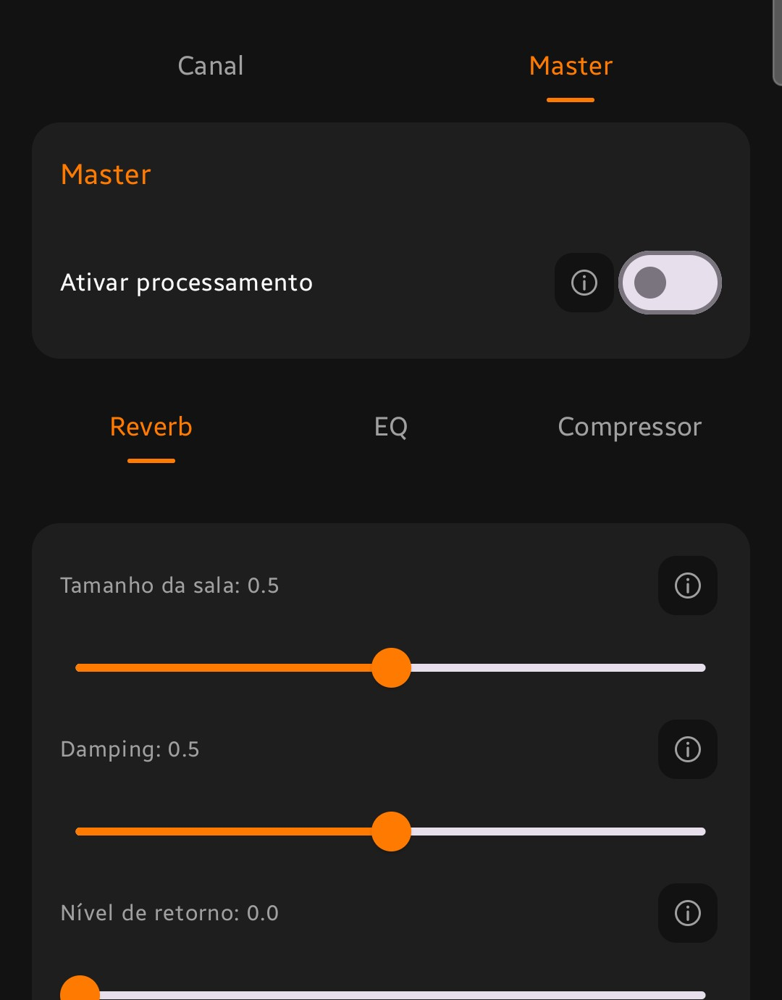
Master - Presets: o menu no topo aplica presets prontos (Rock, Jazz, Metal, Pop, Funk, Vintage, Arena, Ambiente seco ou Flat, sem processamento). Pra guardar a sua mixagem, use "Salvar kit" na aba Início.
Tocar junto com uma faixa e gravar em áudio ou vídeo
Importe uma música (MP3, WAV, AAC, OGG ou FLAC) pra tocar junto enquanto pratica, e grave a sessão inteira — bateria e música misturadas — em áudio ou vídeo.
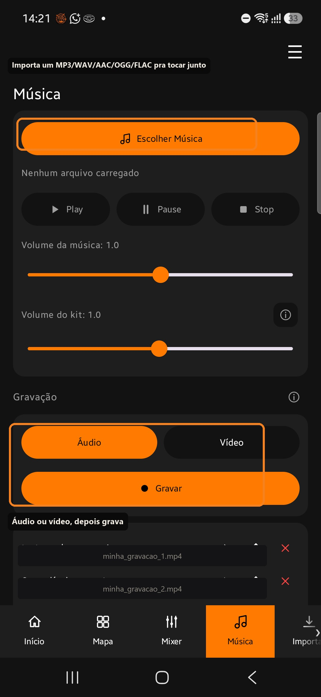
- Escolher Música: importa o arquivo de áudio. Formatos comprimidos carregam em streaming — o play libera assim que o formato é reconhecido.
-
Gravação — Áudio ou Vídeo: no modo Vídeo, a câmera abre com prévia ao vivo por trás dos painéis. "Brilho" ajusta a exposição, e a câmera (frontal/traseira) se escolhe no menu ☰ → Câmera. O áudio do app é sincronizado com a imagem da câmera.
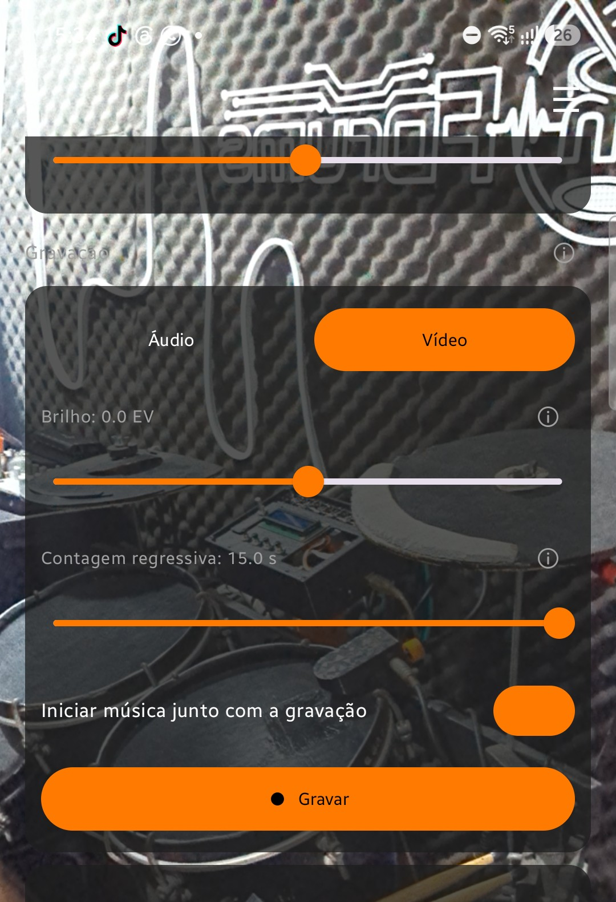
Modo Vídeo - Gravar a interface no vídeo: mostra a tela do app (medidores, pads, mixer) por cima da imagem da câmera, em tempo real e com opacidade ajustável. O vídeo sai no formato da tela do seu aparelho e na orientação em que a tela está — em pé ou deitado.
- Microfone externo na gravação: pra bateria híbrida (ex.: pratos acústicos). Ligue a chave, ajuste o volume do microfone e observe o medidor — se ficar vermelho, o som já chega distorcido no microfone. O microfone entra só na gravação e não sai no fone. Use fone de ouvido: se a bateria sair numa caixa de som, o microfone grava ela de novo.
- Contagem regressiva: ajustável de 0 a 15s, dá tempo de se organizar na bateria antes da gravação começar — com a opção "Iniciar música junto com a gravação".
-
Ao parar: o diálogo "Gravação parada" abre na hora, com barra de progresso enquanto o vídeo é processado. Edite o nome, escolha o formato do áudio (WAV, AAC ou MP3) e confirme em "Salvar", ou "Descartar".
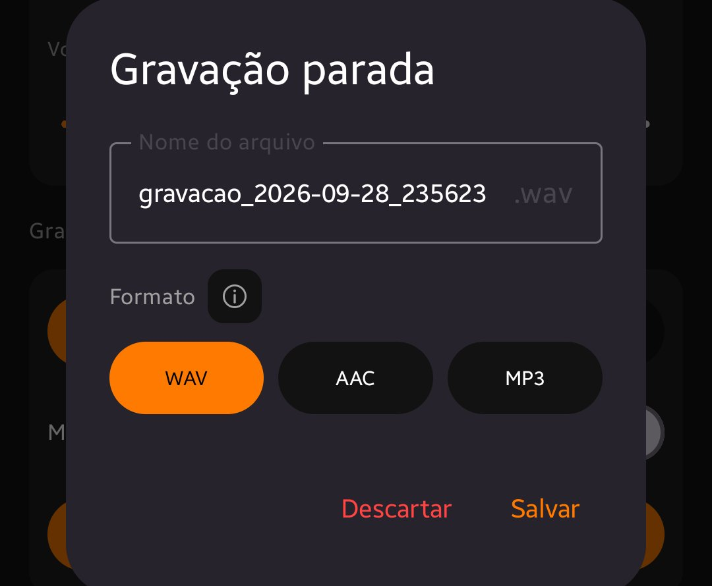
Gravação parada - Gravações salvas: tocar, compartilhar ou excluir uma gravação — os arquivos ficam numa pasta própria em Música/Filmes do aparelho, visível também em outros apps.
Seis formas de trazer um kit pro app
O importador de kit aceita vários formatos de origem — escolha no menu superior qual tipo de arquivo você tem:
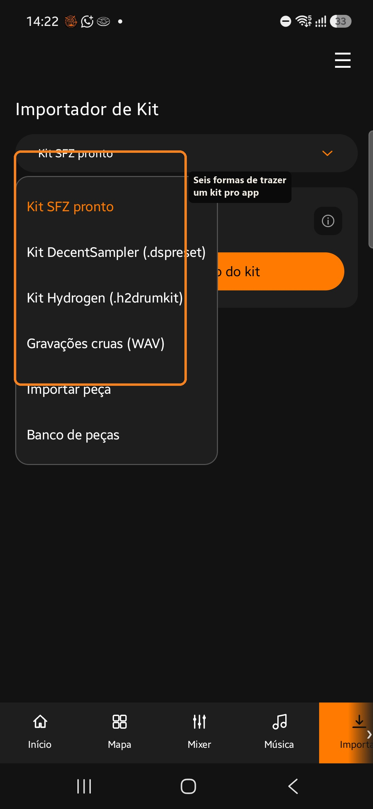
-
Kit SFZ pronto: um .zip com um kit já no formato interno do app (o mesmo formato que "Exportar kit", na aba Início, produz).
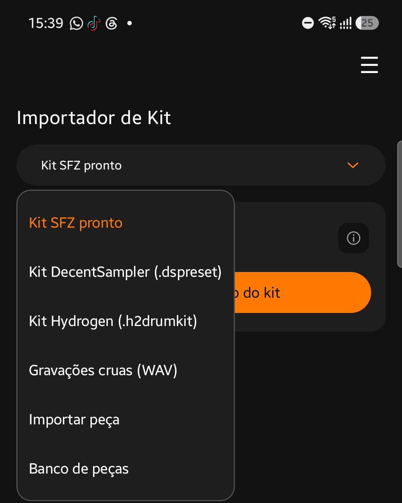
Os 6 modos -
Kit DecentSampler (.dspreset): converte automaticamente kits nesse formato popular.
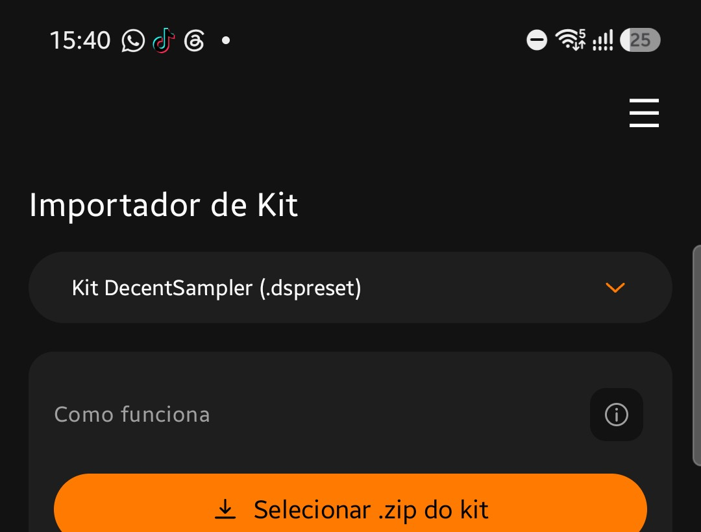
Kit DecentSampler -
Kit Hydrogen (.h2drumkit): mesma ideia, pra kits exportados do Hydrogen (só amostras em WAV são suportadas).
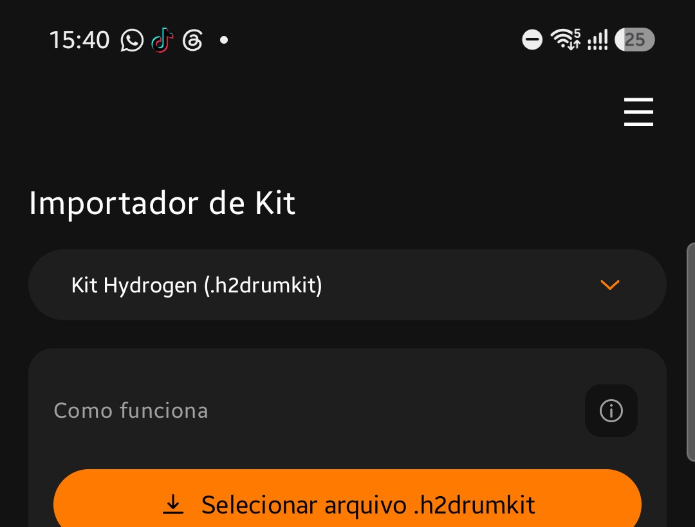
Kit Hydrogen -
Gravações cruas (WAV): uma pasta com gravações avulsas de cada peça — o app detecta os toques automaticamente e monta as regiões de velocity sozinho.
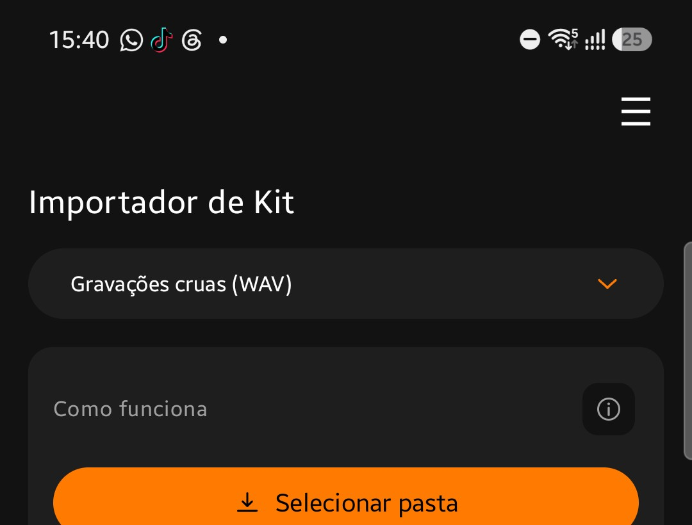
Gravações cruas -
Importar peça: traz uma peça avulsa (um prato, um tom extra) de um arquivo de áudio pronto, pro banco de peças — sem precisar de um kit inteiro. "Gravar peça agora" abre um diálogo com cronômetro e um botão de gravar: peça pra tocar a peça algumas vezes com intensidades diferentes, direto pelo microfone do aparelho, e confirme em "Usar esta gravação".
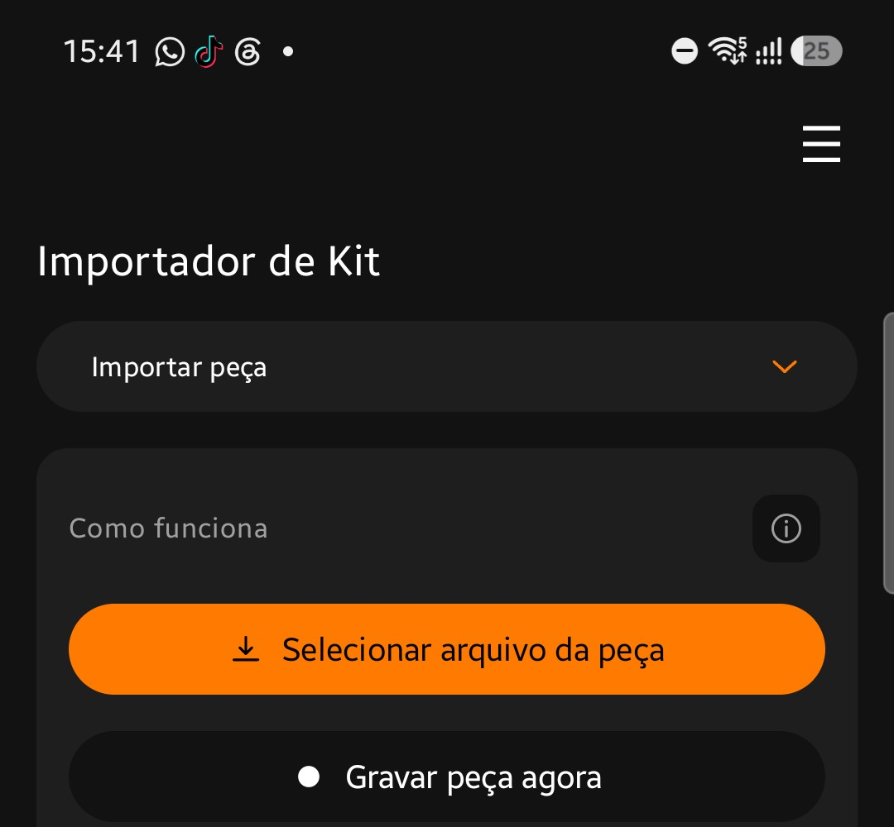
Importar peça 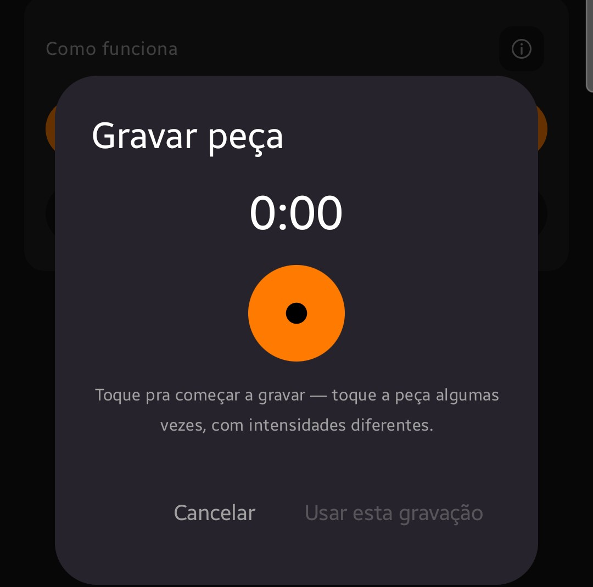
Gravar peça agora -
Banco de peças: lista as peças já gravadas/importadas separadamente (as que apareceram no passo anterior), organizadas por peça — toque ▶ pra ouvir ou ✕ pra excluir uma gravação específica.
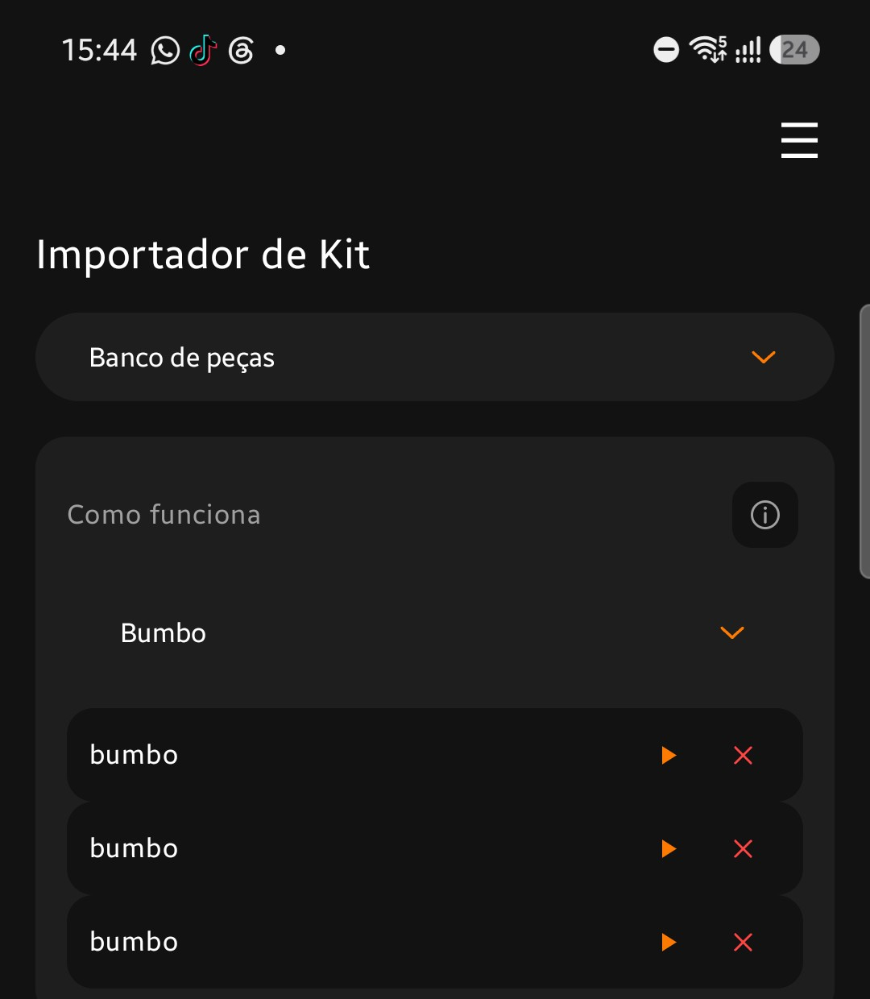
Banco de peças